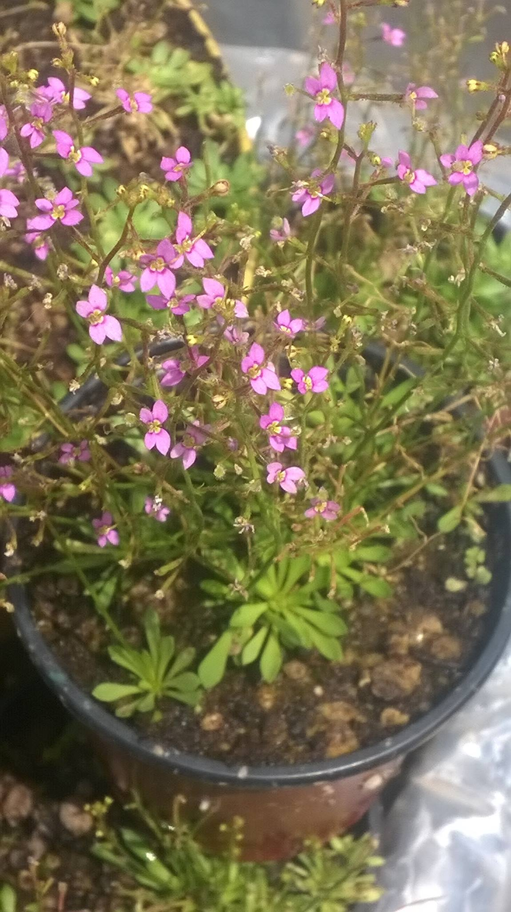
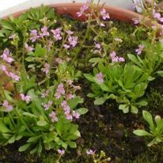

Stylidium
Habitat Natural
Ubicación : Australia, en la región Occidental y del Norte. Otras especies pueden encontrarse en el sudeste de Asia.
Entorno : Se desarrollan en una variedad de hábitats, desde bosques húmedos y matorrales hasta áreas arenosas y abiertas.
Descripcion
Forma: Es una planta de porte bajo y tapizante que crece en rosetas con abundante floración.
Era considerada una Protocarnivora, pero luego de varios estudios se consideró esta especie como Carnivora, cumpliendo la función de poder digerir a sus presas y obtener los nutrientes necesarios.
Tamaño
Tamaño máximo: Aproximadamente 10 cm de diámetro y poca altura, pero forma matas densas que tapizan la superficie en poco tiempo.
Método de Captura - Activo
Mecanismo: Captura insectos utilizando un rápido mecanismo de "martillo". Cuando un insecto toca los pelos sensibles de la flor, el estilo de la planta se mueve rápidamente, golpeando al insecto hacia las glándulas pegajosas en la base de la flor. Allí, el insecto queda atrapado y es digerido lentamente por la planta.
Temperatura
Tolerancia: Prefiere un rango de temperatura entre 15°C y 25°C, pero puede soportar temperaturas ligeramente más bajas o más altas (0°C a 40°C), siempre que no sea por períodos prolongados.
Humedad
Nivel de humedad: Pero en su mayoría toleran una humedad ambiental entre el 40% y el 80%.
Riego
Agua: Se debe regar con agua destilada o de lluvia. Llenar la bandeja con 1 a 2 cm de agua para macetas pequeñas; en macetas más grandes, aumentar un poco más la cantidad.
Estaciones: El riego varía según la estación:
Primavera/Verano: Mantener el suelo siempre húmedo con agua en la bandeja. Se puede dejar la bandeja seca si el sustrato está húmedo, pero no dejar que se seque por completo.
Otoño/Invierno: Regar cuando se acabe el agua de la bandeja y dejar un tiempo secando si es necesario. Observar que el sustrato se seque un poco antes de regar para evitar pudriciones o aparición de hongos.
Floracion
Ciclo: Florece abundantemente a comienzos de primavera. Las flores son pequeñas y rosadas, situadas en tallos delgados.
Flores: Produce un racimo con muchas flores rosadas, pequeñas y poco vistosas.
Trasplantes
Época: Se puede trasplantar durante todo el año, aunque es preferible hacerlo entre el comienzo de la primavera o verano
Motivo: La única razón para trasplantar sería porque una maceta más grande proporcionaría un entorno más estable para las raíces o porque el punto de crecimiento ha llegado al borde de la maceta.
Iluminación
Exterior: Requiere mucha luz, tolerando incluso el sol directo. La iluminación alta aumenta la floración.
Interior: Colocar junto a una ventana que reciba mucha luz. Si es necesario, complementar con iluminación artificial.
Problemas de luz: Si falta luz, las hojas se alargan y se debilitan, doblándose fácilmente. Aumentar la iluminación si esto sucede.
Sustrato
Requerimientos: Estas plantas necesitan un suelo ácido y sin nutrientes. El sustrato más usado es una mezcla de turba rubia y perlita en proporciones 50/50, 60/40 o 70/30.
Hibernación
Hibernación:No hiberna, pero en invierno ralentiza su crecimiento.
Alimentación
Dieta: Se alimenta de cualquier insecto que entre en sus trampas. No requiere alimentación manual.

Flor de Stylidium Debile

Floración de Stylidium Debile

Stylidium Debile